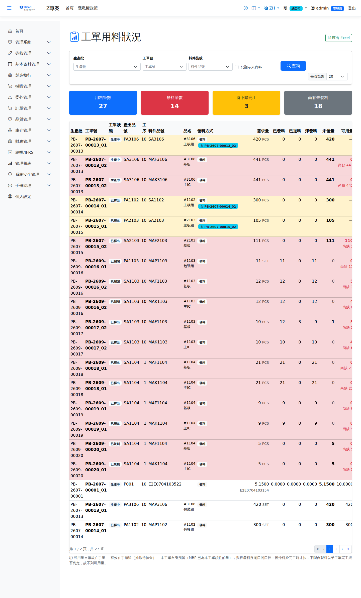

工單用料狀況WO Material Status
路由：/WorkOrderMaterialStatus | 工單逐料的需求／發料／缺料一覽Route: /WorkOrderMaterialStatus | Demand, issue and shortage by material for a work order
以「工單 × 工序 × BOM 序」逐料列出需求量、已發料、已退料、淨發料、未發量與廠級可用量，並標示備齊狀態。 生產批投產被缺料擋下時，可由此查出是哪一張工單、哪一項料、缺多少。Lists demand, issued, returned, net issued, unissued and plant-level available quantity for every material by work order × operation × BOM sequence, together with its kitting status. When a production batch is blocked from release by a shortage, this is where you find out which work order, which material and how much is missing.

工單用料狀況畫面截圖（示意，實際欄位/資料依權限與查詢條件而異）Work order material status screenshot (illustrative; actual fields and data vary by permission and query criteria)
查詢Search
1
可依生產批、工單號、料件品號篩選；勾選「只顯示未齊料」可濾出缺料與待下階完工的料。Can be filtered by production batch, work order number and item; tick "show incomplete kits only" to see just the material that is short or waiting for a lower level to finish.
2
上方統計卡顯示用料筆數、缺料筆數、待下階完工筆數與尚有未發料的筆數。The cards at the top show the number of material lines, shortage lines, lines waiting for a lower level to finish and lines with material still unissued.
3
支援匯出 Excel（需列印權限）。Export to Excel is supported (print permission required).
欄位口徑Field definitions
- 需求量／已發／已退Demand / Issued / Returned：取自工單用料，單位為發料單位。: taken from the work order material, in the issuing unit. 淨發料Net Issued＝已發 − 已退； = issued − returned; 未發量Unissued qty＝需求 − 淨發（下限 0）。 = demand − net issued (never below 0).
- 可用量Available＝廠級在手量 − 有效在手預留（排除待驗倉）＋ = plant on hand − active on-hand reservations (quarantine warehouses excluded) + 本工單自身的預留the work order's own reservation，與生產批投產的料況閘口同一口徑。 MRP 展開時會為工單鎖住在手庫存，那筆預留是「為這張工單保留的」，判斷本工單是否備齊時視為已覆蓋； 被, on the same basis as the material gate in batch release. The MRP run locks on-hand stock for the work order, and because that reservation is held for this work order it counts as covered when deciding whether the work order is fully staged; quantities locked by 其他Other單據鎖走的量則照常扣減。 該工單的 Quantities locked by documents are still deducted as usual. The work order's 備料單Material Staging鎖住的量同樣算「自己的」——備料確認時工單預留已轉移過去。 the quantity it has locked also counts as "its own" — the work order's reservation was transferred to it when the staging was confirmed.
- 備齊狀態Kitting status：
- 已備齊Ready 可用量足夠，或後沖料（完工才扣），或下階自製工單已完工。Enough is available, or the line is backflushed (deducted at completion), or the lower-level work order is already finished.
- 缺料Shortage 可用量小於需求量。Available is less than demand.
- 待下階完工Pending Sub-assembly 該料由下階自製工單供給，子工單尚未完工。The material comes from a lower-level work order which has not finished yet.
- 後沖料與下階自製料不比對庫存，可用量欄顯示「—」。Backflushed material and lower-level made items are not checked against stock, so the available column shows "—".
- 本畫面為唯讀查詢，不會改寫工單的料況狀態；要更新工單表頭的料況徽章，請至工單明細按「檢查料況」。This screen is a read-only enquiry and does not change the work order's material status; to refresh the material badge on the work order header, open the work order and click "Check material".
數量顯示與小數位Quantity display and decimals
- 數量預設依該料的The quantity defaults to the material's 計量單位小數位Unit of measure decimals顯示（如 PCS 為 0 位，顯示整數）。 is displayed (PCS has 0 decimals, so a whole number is shown).
- 但需求量可能因損耗率／下角率算出超過單位精度的值（例：105 × 1.05 ＝ 110.25，而 PCS 為 0 位）。 此時but the scrap rate and offcut rate can produce a requirement with more decimals than the unit allows (e.g. 105 × 1.05 = 110.25 while PCS has 0 decimals). In that case 顯示真值不四捨五入shows the true value without rounding，避免出現「需求 110、可用 110 卻標缺料」的誤解。, so you never get the confusing case of "demand 110, available 110, yet marked short".
- 判為缺料的列，可用量下方會加註Rows judged short of material carry a note under the available quantity 尚缺Short by差額（如「尚缺 0.25」）， 即需求量 − 可用量的實際差距。 the shortfall (e.g. "0.25 short"), i.e. the actual gap between demand and available quantity.
- 2026-07 起From 2026-07：MRP 展開產生工單用料時，需求量會依該料計量單位的小數位: when the MRP run creates the work order material, the demand is rounded to the decimals of that material's unit of measure 無條件進位rounded up （PCS 0 位 → 110.25 進位為 111），避免整數單位出現小數需求量。 此調整只影響之後新展開的工單；(PCS has 0 decimals, so 110.25 rounds up to 111), so that a whole-number unit never carries a fractional demand. The adjustment only affects work orders exploded afterwards; 既有工單的需求量不會被追溯修改the demand quantity of existing work orders is not changed retroactively， 若要讓舊工單改用新口徑，需重跑該張, to move an older work order onto the new basis, re-run its MRP 執行MRP Run。 計量單位主檔查無該單位時維持原值不進位。. If the unit is not found in the unit-of-measure master the value is kept as it is, without rounding up.
欄位說明Field reference
查詢條件Query criteria
| 條件Condition | 說明Guide |
|---|---|
| 生產批 / 工單號 / 料件品號Batch / Work order No / Item | 各自縮小查詢範圍each narrows the query scope |
| 僅顯示短缺Show shortages only | 只列出未備齊（未發量大於可用量）的料件Lists only items that are not fully staged (unissued quantity greater than available) |
清單欄位List columns
| 欄位Field | 說明Guide |
|---|---|
| 生產批 / 工單號 / 工單狀態Batch / Work order No / Status | 料況所屬的生產批、工單與工單目前狀態The production batch and work order the material status belongs to, and the work order's current status |
| 產出品號Output | 工單要生產的成品／半成品Finished or semi-finished item the work order produces |
| 工序Operation | 該用料所屬的途程工序Routing operation the material belongs to |
| 料件品號 / 品名Item code / Item name | 要領用的料件Item to be issued |
| 發料方式Issue Method | 領料（人工開單領用）或倒扣（Backflush，完工時依用量自動扣帳）Issue (a slip is raised by hand) or backflush (deducted automatically at completion according to the usage) |
| 需求量Demand qty | 依工單數量與料表用量（含損耗率、下角率）計算的應領量Quantity that should be issued, calculated from the work order quantity and the BOM usage (including scrap rate and offcut rate) |
| 已發料 / 已退料Issued / Returned | 累計實際發出與退回的數量Cumulative quantity actually issued and returned |
| 淨發料Net Issued | 已發料 － 已退料，即目前實際投入產線的數量Issued − returned, i.e. the quantity actually on the line now |
| 未發量Unissued qty | 需求量 － 淨發料，仍待發出的數量Demand − net issued, i.e. what is still to be issued |
| 可用量Available | 該料件目前庫存的可用量（已扣除他單預留）Available stock of the item at the moment (other documents' reservations already deducted) |
| 備齊狀態Kitting status | 未發量與可用量的比較結果；可用量不足即為短缺，會擋住投產放行The unissued quantity compared with the available quantity; too little available counts as a shortage and blocks release |
相關畫面Related screens
生產批投產Batch Release ｜ 工單查詢Work Orders ｜ 發退料單Material Slips ｜ 生產準備看板Preparation Board